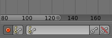
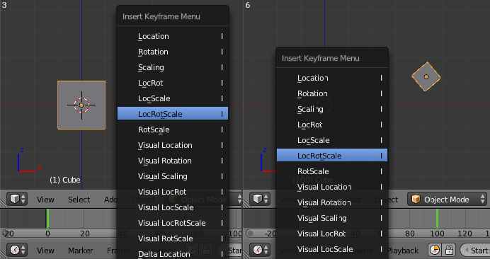
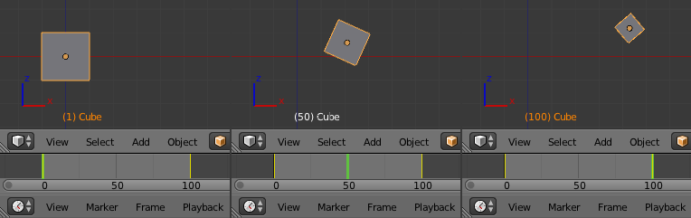

Editing¶
Adding Keyframes¶
There are several methods of adding new keys. Namely:
- In the 3D View, pressing
Iwill bring up a menu to choose what to add a keyframe to. - Hovering over a property and pressing
Ior with the context menu byRMBa property and choose Insert Keyframe from the menu.
Auto Keyframe¶

Timeline Auto Keyframe.
Auto Keyframe is the red record button in the Timeline header. Auto Keyframe adds keyframes automatically to the set frame if the value for transform type properties changes.
See Timeline Keyframe Control for more info.
Removing Keyframes¶
There are several methods of removing keyframes:
- In the 3D View press
Alt-Ito remove keys on the current frame for selected objects. - When the mouse is over a value press
Alt-I. RMBa value and choose Delete Keyframe from the menu.
Editing Keyframes¶
Keyframes can be edited in two editors. To do so go to either the Graph Editor or the Dopesheet.
Examples¶
Keyframe Animation¶
This example shows you how to animate a cubes location, rotation, and scale.
- First, in the Timeline, or other animation editors, set the frame to 1.
- With the Cube selected in Object Mode, press
Iin the 3D View. - From the Insert Keyframe Menu select LocRotScale. This will record the location, rotation, and scale, for the Cube on frame 1.
- Set the frame to 100.
- Use Grab/Move
G, RotateR, ScaleS, to transform the cube. - Press
Iin the 3D View. From the Insert Keyframe Menu select LocRotScale.

{kind=link}
Insert Keyframes.
To test the animation, press Alt-A to play.

{kind=link}
The animation on frames 1, 50, 100.